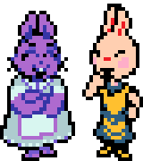
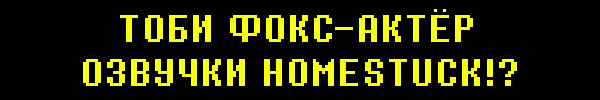
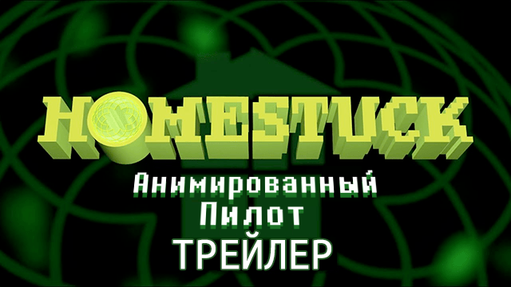

Прошло 10 лет с релиза UNDERTALE...
Следовательно, нас ждет...
В точку!!!
Давайте устроим стрим, где мы поиграем в UNDERTALE, точно так же, как мы играли в 1 главу DELTARUNE!!!
(Смотрит на календарь и понимает, что годовщина приходится на будний день...)
Эмм...
Хотя, почему бы нам не собраться на выходных после годовщины?
Мероприятие будет проходить в течение двух дней в 16:00 по североамериканскому времени 20 и 21 сентября...
И вы можете посмотреть его тут.
Все верно, два дня! Когда мы засекали, сколько времени займет игра, на таймере было более 8 часов ...
Так что мы разделили все мероприятие на части. Нам придется сыграть половину игры в один день и половину - на следующий.
Конечно об этом можно много говорить... но кому вообще понравится это смотреть?
Как вы помните, в прошлый раз вышли 3 & 4 главы DELTARUNE.
Я действительно хочу вернуться к ним и обсудить свои мысли!!
Но...
У меня нет на это времени прямо сейчас...
Годовщина уже на носу.
Сейчас нет времени это обсуждать...
Вместо этого давайте поговорим о 5 главе
Некоторым из вас, возможно, интересно, что это будет за глава...
Но прямо сейчас нет причин говорить вам об этом...
Мы же все любим сюрпризы, ведь так?
Если вдуматься во все, что описано в этой главе, то я бы мало чем хотел поделиться...
Как бы то ни было, в качестве акта доброй воли я хотел бы нагло заспойлерить одну необязательную сцену в Замке. В этой сцене предполагается, что вы уже видели специальную комнату в главе 4...
В следующий раз я смогу показать больше интересного в Городке у Замка
О проделанной работе по состоянию на 8 сентября 2025 года..
ЛОКАЦИИ
- Начальные локации 5 главы завершены, но нуждаются в доработке в необязательных местах.
- Последние 40% игры находятся в состоянии "черновика", а заключительные 10% - в состоянии "прототипа".
- Вероятно, около 85% катсцен были созданы в черновом виде, однако, по крайней мере, 20% из них или около того потребуют дополнительной доработки.

ВРАГИ
- Обычные враги в основном закончены. Один из программистов уже работает над атаками обычных врагов в 6 главе.
- Направление сражений с боссами определено, и многие атаки уже завершены.
- Когда мы доделаем и соберём атаки,следующей целью будет их согласовывание и изменение для большего соответствия атмосфере сражения.
В ЦЕЛОМ
В 3 и 4 главах были некоторые творческие "препятствия", которые затрудняли разработку некоторых частей игры. Например, создание досок в 3 главе, разработка событий в доме Ноэль и т.д.
Как только мы преодолели эти трудности и расширили команду, все пошло гораздо более гладко.
В 5 главе тоже не обошлось без "препятствий"! Но... мы уже прошли все очевидные, так что теперь нам ничто не помешает! Нам просто нужно продолжать делать игру.
ГРАФИК
Приблизительный график работы будет выглядеть примерно так...
РАЗРАБОТКА ИГРЫ (мы тут)
v
ЛОКАЛИЗАЦИЯ / РАЗРАБОТКА ИГРЫ / ПОРТИРОВАНИЕ ИГРЫ
v
КОНЕЦ РАЗРАБОТКИ
v
ТЕСТИРОВАНИЕ И ИСПРАВЛЕНИЕ БАГОВ
v
РЕЛИЗ
В настоящее время у нас есть один главный дедлайн: я хочу начать перевод к концу 2025 года.
После этого момента изменения игрового процесса будут приемлемы, но масштабные изменения текста и сюжета будут строго запрещены.
С учетом локализации и тестирования... Я не думаю, что игра выйдет в первой половине 2026 года.
... Это неудивительно, правда? Из последних обновлений вы, ребята, можете точно узнать, сколько времени занял каждый этап разработки.
В любом случае, на этот раз у нас нет никаких внешних факторов, связанных с датой релиза. Мы выпустим главу, когда она будет готова, и будем продолжать информировать вас о ходе её завершения. Спасибо!
Позвольте мне рассказать вам о "Застрявших дома".
Если вы еще не слышали о "Застрявших дома", то это был веб-комикс, который, по сути, положил начало моей карьере. В далеком 2010 году я был старшеклассником и вообще не стремился к сочинению музыки - так было до тех пор, пока я не открыл для себя этот комикс, который мне кстати очень понравился. Видите ли, в анимационных эпизодах комикса была музыка, созданная командой очень талантливых музыкантов - "the Homestuck Music Team". И я так загорелся желанием стать частью моего любимого комикса, как они. Что когда был объявлен набор дополнительных музыкантов, я сразу же воспользовался этой возможностью, чтобы "стать композитором". Я сочинил плохую музыку, отправил её им и... автор комикса добавил меня в группу!
Конечно же, я не хотел упускать эту возможность, поэтому я очень старался сочинить как можно больше музыки, сочетая как можно больше мотивов, взятых у других музыкантов. Именно этот опыт превратил меня в композитора, которым я являюсь сегодня.
Кроме того, благодаря моей связи с комиксом, у меня появились подписчики в социальных сетях, что очень помогло мне, когда я собрал на Kickstarter средства для UNDERTALE. (Вы знаете, это именно то, что позволило мне в итоге создать игру). Я даже изначально связался с Темми именно из-за фанарта "Застрявших дома", который она сделала на Tumblr.
Итак... Я действительно многим обязан "Застрявшим дома"! Работа в этом проекте помогла мне лучше разбираться в музыке, позволила мне создать свою игру, связала меня со многими важными друзьями и научила меня тому, как обращаться с фандомом и как важно ценить своих поклонников. На мой взгляд, это, по сути, долг, который я, возможно, никогда не смогу вернуть.
Поэтому, когда меня спросили, могу ли я помочь с новой анимацией "Застрявших дома", я сказал, что попробую! ... Удивительно, но запрос был не на музыку, а на озвучку... Тем не менее, я чувствовал, что просто обязан помочь.
Ожидание в студии озвучивания стало еще одним сюрпризом... Через несколько минут после начала записи с режиссером я заметил... "Эй... а разве у этого парня не спокойный голос?... Даг из "Злых бобров"???" Оказалось, что режиссером озвучивания был Ричард Дэвид Хорвиц, который озвучивал Пришельца Зима! Конечно, запись заняла достаточное количество времени, но было так весело, что, время пролетело за мгновение. На самом деле я не профессионал, поэтому нервничал из-за результата, но Пришелец Зим сказал мне, что я хорошо поработал... так что я просто доверюсь ему...
В любом случае, это был мой опыт в помощи другим создателям!
А теперь я хотел бы показать вам трейлер! Я играю роль Джона Эгберта, парня в очках. Но сначала хочу предупредить наиболее чувствительную часть моей аудитории...
В "Застрявших дома" много непристойностей, и они заставили меня произнести несколько довольно непристойных вещей, так что, если вы ребенок или предпочитаете не слышать таких слов, не смотрите!
Спасибо.
Компания Fangamer разработала альтернативную версию OFF, доступную для Nintendo Switch И Steam. Это легендарная игра, созданная на RPG maker. Персонажи оттуда послужили вдохновением для создания дизайнов Санса и Папируса.
ACC, музыкант, автор оригинальной версии (теперь доступно онлайн бесплатно и навсегда) не хотел, чтобы его музыка использовалась в ремейке, но также не возражал против того, чтобы мы вместе записывали новые треки. Это немного странно, но создатель OFF – Мортис Гост попросил меня помочь, и я сделал несколько треков для игры.
Вы можете скачать все мои песни бесплатно тут.
Они так же доступны на Ютуб.
Наслаждайтесь!
Недавно вышло несколько музыкальных альбомов, состоящих из каверов на музыку UNDERTALE и DELTARUNE, которые я хотел бы порекомендовать вам.
Сборник фортепианной музыки DELTARUNE, 1-й том — уже в продаже!
Несколько виртуозных фортепианных аранжировок музыки DELTARUNE в исполнении Тревора Алана Гомеса. Я очень рекомендую вам послушать это. Если вы хотите попробовать ее бесплатно, то она доступна на Ютубе.
Monstercat x Undertale - выйдет уже 6 октября
Альбом электронных аранжировок UNDERTALE, подготовленный Monstercat и Firaga Records. Над созданием этого альбома очень усердно трудились многие артисты, и в нем сквозит творчеством. Полный релиз альбома состоится в понедельник, 6 октября. Нажмите сюда, чтобы стать одним из первых слушателей.
Когда я искал «Тенна» в магазине Fangamer, мне попалась футболка с надписью «ЕНА».

Он не похож на мой обычный мерч, но, думаю, я должен посоветовать вам купить его...
Прошло 10 лет, и это надоедает...
... Значит ли это, что на самом деле я надоедливый?
... В общем, приберегу свои слова для грядущего мероприятия.